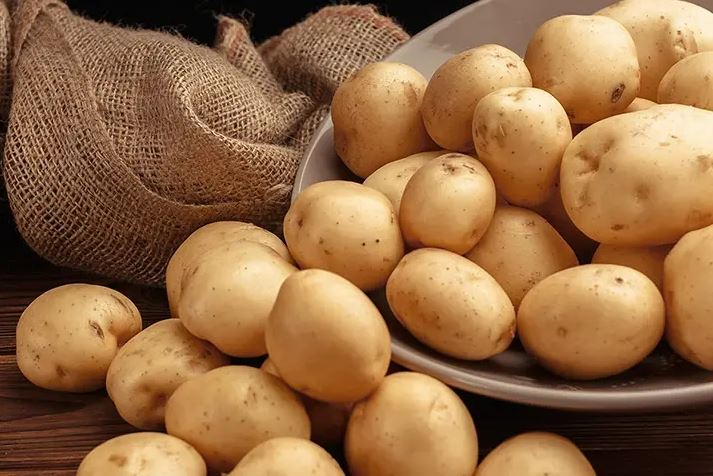

Món quà dinh dưỡng từ lòng đất

Khoai tây (tên khoa học: Solanum tuberosum) là loài cây nông nghiệp ngắn ngày, trồng lấy củ chứa hàm lượng tinh bột cao. Đây là loại cây lương thực phổ biến thứ tư trên thế giới, chỉ đứng sau lúa gạo, lúa mì và ngô.
Khoai tây là nguồn cung cấp vitamin và khoáng chất tuyệt vời cho cơ thể:
| Thành phần | Hàm lượng | Lợi ích |
|---|---|---|
| Năng lượng | 87 calo | Cung cấp năng lượng cho cơ thể hoạt động |
| Carbohydrate (Tinh bột) | 20.1 g | Nguồn cấp đường chậm, giữ no lâu |
| Kali | 379 mg | Tốt cho tim mạch và huyết áp |
| Vitamin C | 13 mg | Tăng cường hệ miễn dịch và chống oxy hóa |
Khoai tây rất dễ chế biến và có thể biến tấu thành nhiều món ăn hấp dẫn khác nhau:
Không nên ăn khoai tây đã mọc mầm hoặc có các đốm màu xanh lục trên vỏ. Lúc này, củ khoai chứa lượng lớn chất solanine – một loại độc tố có thể gây ngộ độc, đau bụng và nôn mửa.